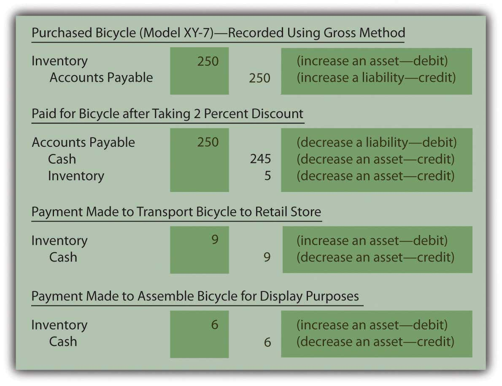

At the end of this section, students should be able to meet the following objectives:
Question: In an earlier chapter, differences between a perpetual inventory system and a periodic inventory system were discussed briefly. A perpetual system—which frequently relies on bar coding and computer scanning—maintains an ongoing record of all items present. How is the recording of an inventory purchase carried out in a perpetual system?
Answer: When a perpetual inventory systemAccounting system that maintains an ongoing record of all inventory items; records increases and decreases in inventory accounts as they occur as well as the cost of goods sold to date. is in use, all additions and reductions are monitored in the inventory T-account. Thus, theoretically, the balance found in that general ledger account at any point in time will be identical to the merchandise physically on hand. In actual practice, recording mistakes as well as losses such as theft and breakage create some (hopefully small) discrepancies. Consequently, even with a perpetual system, the inventory records must be reconciled occasionally with the items actually present to reestablish accuracy.
In a perpetual inventory system, the maintenance of a separate subsidiary ledger showing data about the individual items on hand is essential. On February 28, 2009, Best Buy reported inventory totaling $4.753 billion. However, the company also needs specific information as to the quantity, type, and location of all televisions, cameras, computers, and the like that make up this sum. That is the significance of a perpetual system; it provides the ability to keep track of the various types of merchandise. The total cost is available in the inventory T-account but detailed data about the composition (the quantity and frequently the cost) of merchandise physically held is maintained in a subsidiary ledger where an individual file can be available for each item.
Below are the journal entries that Rider Inc. (the sporting goods company) makes for its purchase of a bicycle to sell (Model XY-7) if a perpetual inventory system is utilized. A separate subsidiary ledger file (such as shown previously) is also established to record the quantity and cost of the specific items on hand.
The assumption is made here that the transportation and assembly charges are paid in cash. Furthermore, the actual purchase is initially on credit with payment made during the ten-day discount period. The bicycle is recorded at $250 and then reduced by $5 at the time the discount is taken. This approach is known as the “gross method of reporting discounts.” As an alternative, companies can choose to anticipate taking the discount and simply make the initial entry for the $245 expected payment. This option is referred to as the “net method of reporting discounts.”
Figure 8.3 Rider Inc.—Journal Entries—Perpetual Inventory SystemIf the net method is applied by Rider Inc. the initial purchase entry is recorded as $245. Later, if the discount is not taken, the additional cost of $5 is recorded as a loss or an expense rather than as a capitalized cost of the inventory because it is not normal and necessary to pay the extra amount.
After posting these entries, the inventory T-account in the general ledger reports a net cost of $260 ($250 – $5 + $9 + $6) and the separate subsidiary ledger shown previously indicates that one Model XY-7 bicycle is on hand with a cost of $260.
Link to multiple-choice question for practice purposes: http://www.quia.com/quiz/2092884.html
Question: In a periodic system, no attempt is made to keep an ongoing record of a company’s inventory. Instead, the quantity and cost of merchandise is only determined periodically as a preliminary step in preparing financial statements. How is the actual recording of an inventory purchase carried out in a periodic system?
Answer: If a company uses a periodic inventory systemAccounting system that does not maintain an ongoing record of all inventory items; instead, ending inventory is determined by a physical count so that a formula (beginning inventory plus purchases less ending inventory) can be used to determine cost of goods sold., neither the cost nor the quantity of the specific inventory items on hand is monitored. These data are not viewed by company officials as worth the cost and effort required to gather it. However, transactions still take place and a record must be maintained of the costs incurred. This information is eventually used for financial reporting but also—more immediately—for control purposes. Regardless of the recording system, companies want to avoid spending unnecessary amounts on inventory as well as tangential expenditures, such as transportation and assembly. If the accounting system indicates that a particular cost is growing too rapidly, alternatives can be investigated before the problem becomes serious. Periodic systems are designed to provide such information through the use of separate general ledger T-accounts for each cost incurred.
Assume that Rider uses a periodic inventory system. Its journal entries for the acquisition of the Model XY-7 bicycle are as follows. No subsidiary ledger is maintained. The overall cost of the inventory item is not readily available and the quantity (except by visual inspection) is unknown. At any point in time, company officials do have access to the amounts spent for each of the individual costs (such as transportation and assembly) for monitoring purposes.
Because these costs result from the acquisition of an asset that eventually becomes an expense when sold, they follow the same debit and credit rules as those accounts.
Figure 8.4 Rider Inc.—Journal Entries—Periodic Inventory System

Note that the choice between using a perpetual and periodic system impacts the following:
Regardless of the system, Rider holds one piece of inventory with a cost of $260. The decision as to whether to utilize a perpetual or periodic system is based on the added cost of the perpetual system and the difference in the information generated for use by company officials. The company’s inventory is not physically affected by the method selected.
Link to multiple-choice question for practice purposes: http://www.quia.com/quiz/2092920.html
Link to multiple-choice question for practice purposes: http://www.quia.com/quiz/2092921.html
Question: Given the availability of sophisticated computers, do any companies still use periodic inventory systems? With bar coding and the advanced state of technology, is periodic inventory simply an antiquated system that is no longer found in actual practice?
Answer: Obviously, in this computer age, perpetual inventory systems have come to dominate because they provide valuable information to company officials. However, some types of businesses will simply never change from the simplicity of a periodic system.
A beauty salon or barber shop, for example, where services are rendered but a small amount of inventory is kept on hand for occasional sales, would certainly not need to absorb the cost of a perpetual system. Visual inspection can alert the employees as to the quantity of inventory on hand.
Restaurants, sandwich shops, ice cream stores, and the like might well choose to use a periodic system because purchasing usually takes place at the establishment where quantities are easy to observe and manage. The information provided by a perpetual system does not necessarily provide additional benefit.
“Dollar stores,” which have become particularly prevalent in recent years, sell large quantities of low-priced merchandise. Goods tend to be added to a store’s inventory as they become available rather than based on any type of managed inventory strategy. Again, officials must decide whether keeping up with the inventory on hand will impact their decision making. If not, the cost of a perpetual system is unnecessary.
Perhaps, most importantly, some companies often use a hybrid system where the units on hand and sold are monitored with a perpetual system. However, to reduce cost, the dollar amounts are only determined using a periodic system at the end of the year to prepare financial statements. In that way, the company gains valuable information (the number of units on hand) at a reduced amount.
Perpetual inventory systems are designed to maintain updated figures for inventory as a whole as well as for individual items. Separate subsidiary ledger accounts show the balance for each type of inventory so that company officials can know the size, cost, and composition of the merchandise. A periodic system is cheaper to operate because no attempt is made to monitor inventory balances (in total or individually) until financial statements are to be prepared. A periodic system does allow a company to control costs by keeping track of the individual inventory costs as they are incurred.